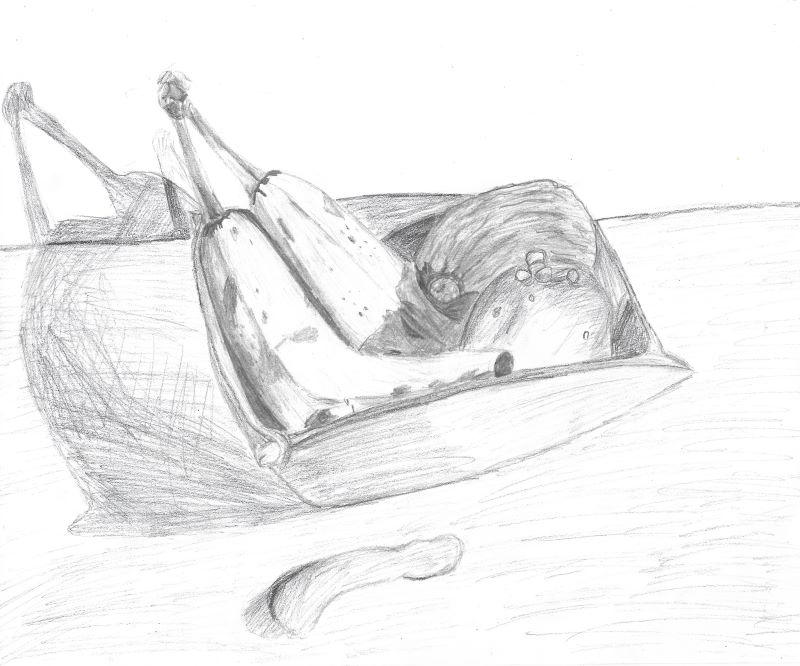

Drawing
To be honest, I'm not very talented at drawing nor was I born to be talented at it. I would say that I'm somewhat decent due to my practice over the years. Personally, I find drawing to be very relaxing and calming and I enjoy it as a hobby. Right below is one of my somewhat decent "masterpiece".
